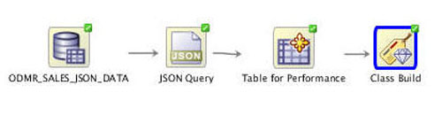
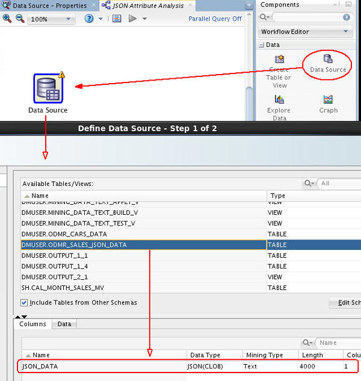
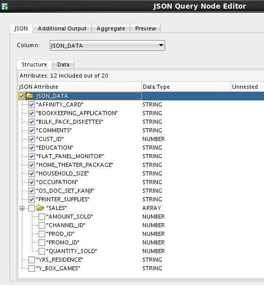
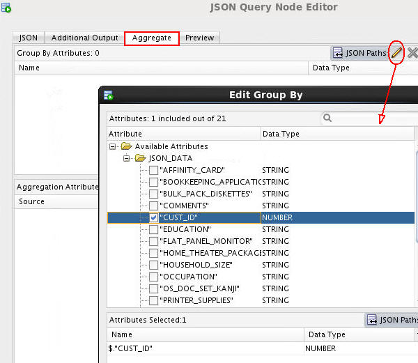
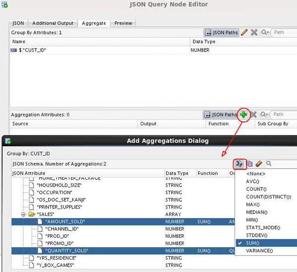
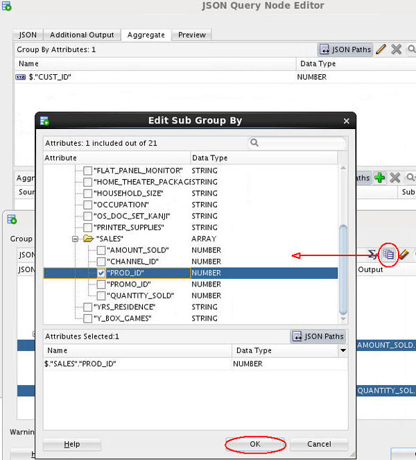
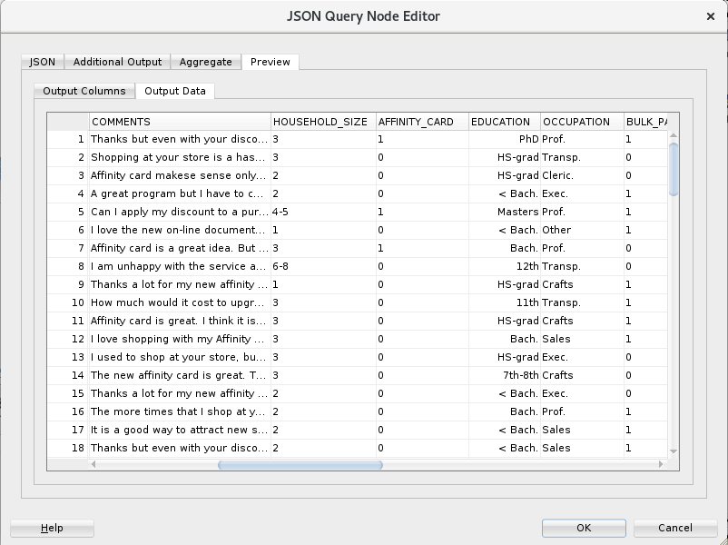
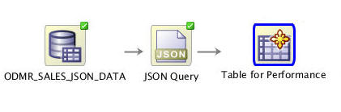

Create
a JSON Data Miner Workflow
Create
a JSON Data Miner Workflow Before You Begin
Before You Begin
This 15-minute tutorial shows you how to create a workflow for querying JSON data and persisting the results in a table.
Background
JSON is a popular lightweight data structure commonly used by Big Data. For example, web logs generated in the middle tier web servers are likely in JSON format. NoSQL database vendors have chosen JSON as their primary data representation. Moreover, the JSON format is widely used in the RESTful style Web services responses generated by most popular social media websites like Facebook, Twitter, LinkedIn, etc. This JSON data could potentially contain a wealth of information that is valuable for business use.
Oracle Database provides ability to store and query JSON data. To take advantage of the database JSON support, Oracle Data Miner provides a JSON Query node that allows users to query JSON data as a relational format.
In additional, the current Data Source and Create Table nodes are enhanced to allow users to specify JSON data in the input data source.
Scenario
In this lesson, you create a workflow that imports JSON data by using the JSON Query node. The JSON Query node enables you to selectively query desirable attributes and project the result in relational format. Once the data is in relational format, you can treat it as a normal relational data source and start analyzing and mining it immediately.
In the workflow, you:
- Identify the JSON data
- Specify the desirable attributes for query purposes
- Examine the JSON data using the JSON Query node
- Build Classification models to provide predictive analysis on the JSON data
The completed workflow looks like this:

What Do You Need?
- Oracle Database 19c Enterprise Edition
- Oracle SQL Developer version 19.x
- Oracle Data Miner User Account
 Create
a Data Miner Project
Create
a Data Miner Project
- Right-click your Data Miner connection and select New Project.
- In the Create Project window, enter Big Data Analysis as the project name and then click OK.
 Create
a Workflow and Add the Data Source
Create
a Workflow and Add the Data Source
- Right-click the Big Data Analysis project and select New Workflow from the menu.
- In the Create Workflow window, enter JSON Attribute Analysis as the name and click OK.
- In the Components tab, open the Data category.
- Drag and drop the Data Source node onto the Workflow pane.
The Define Data Source wizard opens automatically.
- In the Available Tables/View list, scroll down and select
the ODMR_SALES_JSON_DATA table.

Description of the illustration define-json-data-source.jpg Notice that there is only one column (JSON_DATA) in this table, of JSON(CLOB) data type. The JSON prefix indicates that the data stored is in JSON format, and that CLOB is the original data type.
- Click Finish to at the data source node to the workflow.
- Right-click the data source node and select Run from the menu.
 Create
a JSON Query
Create
a JSON Query
- Drag and drop a JSON Query node from the Transforms group to the workflow.
- Connect the data source node to the JSON Query node.
- Double-click the JSON Query node to open the JSON Query Node Editor window.
- Select JSON_DATA as the Column.
- Select all of the JSON attributes down to, but not including
SALES.

Description of the illustration select-json-attributes-except-sales.jpg - Select the Aggregate tab. You will define
aggregations for QUANTITY_SOLD and AMOUNT_SOLD attributes
(within the SALES array):
- Click the Edit Attribute tool (pencil icon) in the Group By Attributes region.
- In the Edit Group By window, select CUST_ID
as the Group-By attribute.

Description of the illustration select-custid-groupby-attribute.jpg - Click OK to return to the Aggregate tab.
- In the Add Aggregations Dialog window, scroll down and
select both the AMOUNT_SOLD and QUANTITY_SOLD
attributes. Then click the Function tool () and
select SUM from the list as the
aggregation function.

Description of the illustration add-aggregations-dialog.jpg - Click the Sub-Group By Element tool
(next to the Formula tool) and select PROD_ID
from the list. This selection specifies calculation of
quantity sold and amount sold per product per
customer.

Description of the illustration edit-subgroup-by.jpg - Click OK to return to the Add Aggregates Dialog.
- Click OK again to return to the JSON Query Node Editor.
- Click the Preview tab and then the Output
Data tab.

Description of the illustration json-query-node-editor-preview.png The Output Data tab shows the actual data in the generated relational output.
- Click OK to close the JSON Query Node Editor.
- Right-click the JSON Query node and select Run from the menu.
 Persist
JSON Query Results in a Table
Persist
JSON Query Results in a Table
- Drag and drop a Create Table node to the workflow.
- Connect the JSON Query node to the OUTPUT node.
- Double-click OUTPUT node, and change the table name to JSON_OUTPUT. Then click OK.
- Rename the OUTPUT node to Table for Performance.

Description of the illustration add-table-node.jpg
 Next Tutorial
Next Tutorial
In the next tutorial, you'll buid the JSON data classification models and analyze the results.